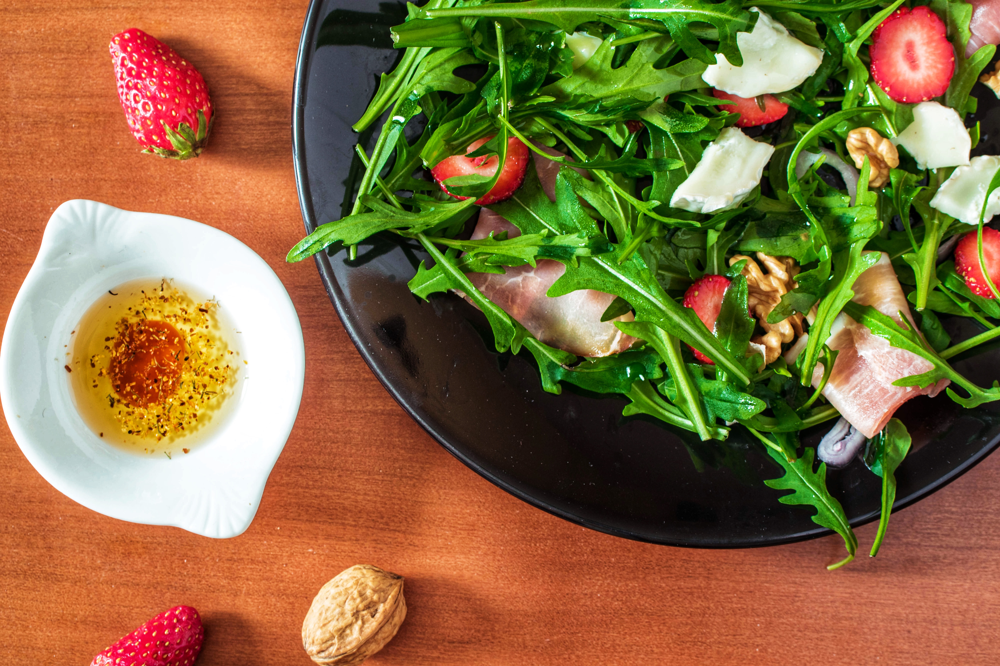

Find
Our site offers greater access to the hard working farmers in your community. Have a chance to support your local area, promote cleaner eating, and find great produce options. Now you can have healthy, locally grown produce at the tip of your fingers. Choose from a variety of local farms, all year long!
Connect, and Learn
Message the farmers directly, to learn more about your agricultural community. Learn when a specific item is in season, ways to prepare it, and how you can spread clean grown food.